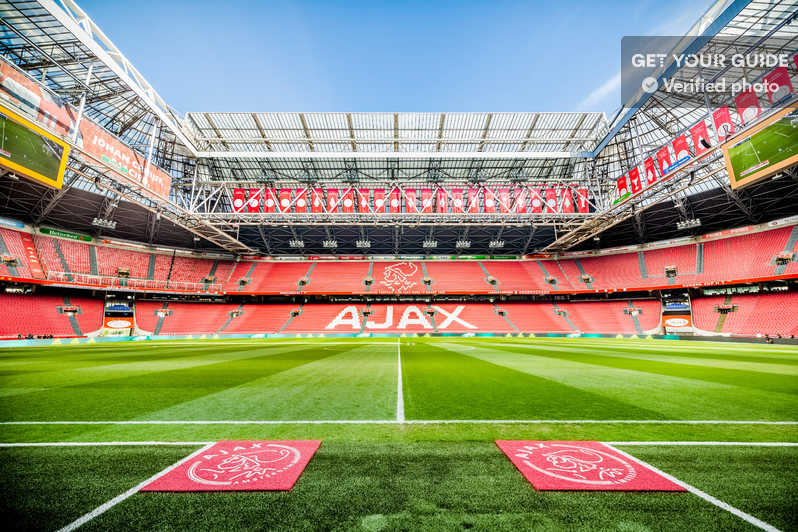
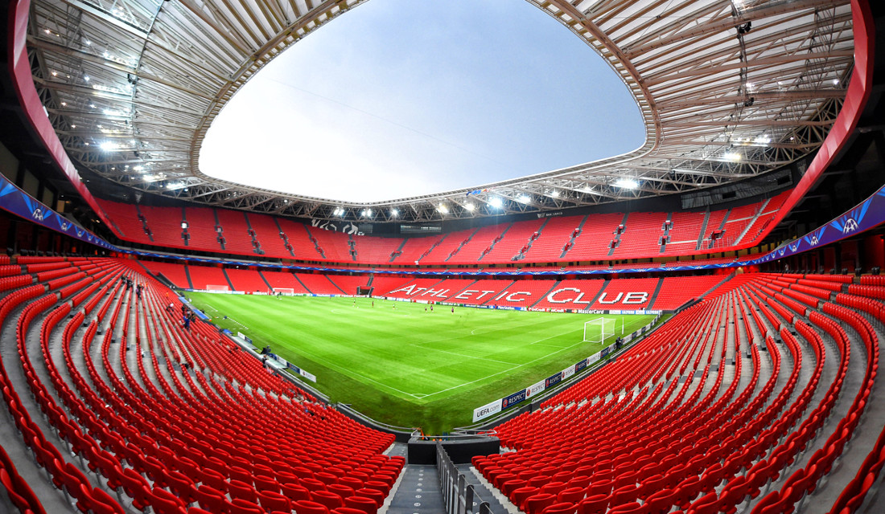
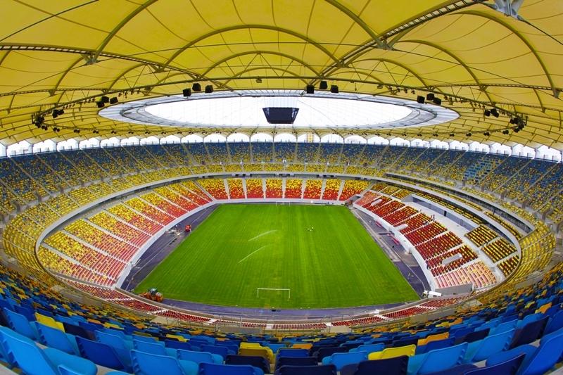
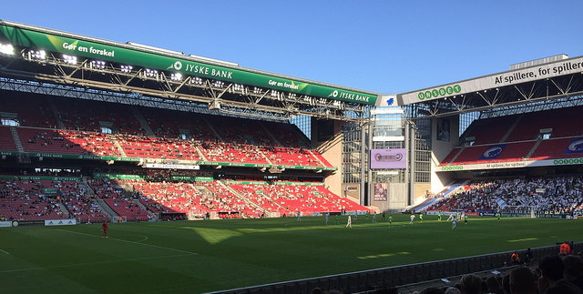
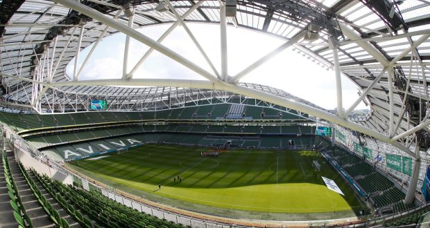
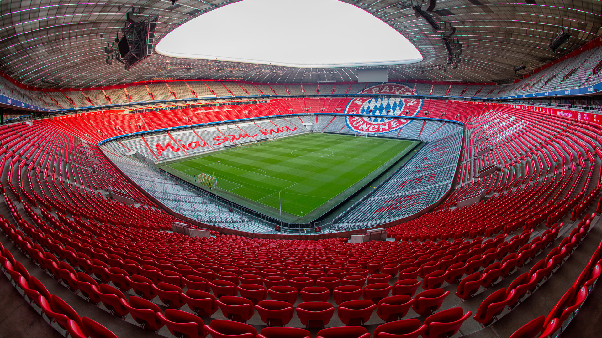
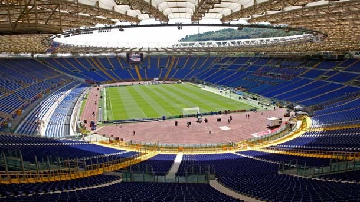
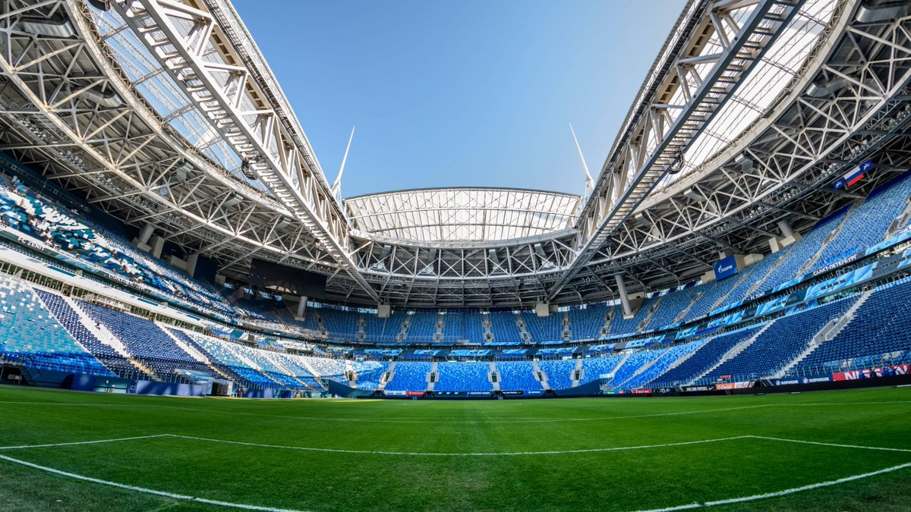

EURO 2020
STADIUMS AND MATCHES GUIDE
Johan Cryuff Arena

The stadium was the first in Europe with a sliding roof.
The venue was renamed Johan Cryuff Arena in 2018 in honour of Ajax's former player and coach.
The stadium was the first in Europe with a sliding roof.
► Sunday, 14 June - Group C Match
► Thursday, 18 June - Group C Match
► Monday, 22 June - Group C Match
► Sunday, 27 June - Round of 16 (2A V 2B)
San Mames Stadium

The home of Athletic Club de Bilbao
The stadium can be illuminated from the outside
► Monday, 15 June - Group E Match
► Saturday, 20 June - Group E Match
► Wednesday, 24 June - Group E Match
► Sunday, 28 June - Round of 16 (1B v 3A/D/E/F)
National Arena Bucharest

The National Arena stands on the site of the old National Stadium
The stadium has a retractable roof which takes only 15 minutes to open or close
► Sunday, 14 June – Group C match
► Thursday, 18 June – Group C match
► Monday, 22 June – Group C match
► Monday, 29 June – Round of 16 (1F v 3A/B/C)
Puskas Arena
Named after Hungary's most famous player Ferenc Puskas
The old ground was the venue for England's heaviest international defeat, they lost 7-1 to Hungary in 1954
► Tuesday, 16 June – Group F match
► Saturday, 20 June – Group F match
► Wednesday, 24 June – Group F match
► Sunday, 28 June – Round of 16 (1C v 3D/E/F)
Parken Stadium

The largest football stadium in Denmark
Hosted 1994 Cup Winners' Cup Final and UEFA Cup final in 2000
► Saturday, 13 June – Group B match
► Thursday, 18 June – Group B match
► Monday, 22 June – Group B match
► Monday, 29 June – Round of 16 (2D v 2E)
Aviva Stadium

Hosted the 2011 UEFA Cup Final
Formely known as Lansdowne Road first founded in 1872
► Monday, 15 June – Group E match
► Friday, 19 June – Group E match
► Wednesday, 24 June – Group E match
► Tuesday, 30 June – Round of 16 (1D v 2F)
Hampden Park
Hampden Park is the oldest international football stadium in the world
Hosted the 2002 UEFA Champions League Final
► Monday, 15 June – Group D match
► Friday, 19 June – Group D match
► Tuesday, 23 June – Group D match
► Tuesday, 30 June – Round of 16 (1E v 3A/B/C/D)
Allianz Arena

The LED's can shine in 16 million different colours
On a clear night, the stadium can be seen from the Austrian Alps
► Tuesday, 16 June – Group F match
► Saturday, 20 June – Group F match
► Wednesday, 24 June – Group F match
► Friday, 3 July, 21:00 CET – Quarter-final
Stadio Olimpico

Lazio and Roma football clubs curently joint share it
Has undergone several makeovers since 1953
► Friday, 12 June– Group A match
► Wednesday, 17 June – Group A match
► Sunday, 21 June – Group A match
► Saturday, 04 July - Quarter-final
Petrovsky Stadium

Home of Zenith St. Petersburg
One of the main stadiums used in the 2018 FIFA World Cup
► Saturday, 13 June – Group B match
► Wednesday, 17 June – Group B match
► Monday, 22 June – Group B match
► Friday, 03 July – Quarter-final